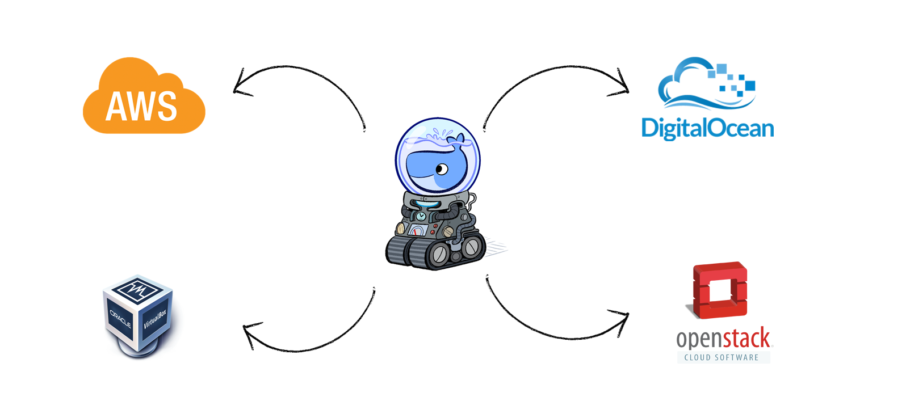

Build, Ship, Run
What is Docker?
Docker allows you to package an application with all of its dependencies into a standardized unit for software development.
Interest
What is Docker?
Docker containers wrap up a piece of software in a complete filesystem that contains everything it needs to run: code, runtime, system tools, system libraries – anything you can install on a server. This guarantees that it will always run the same, regardless of the environment it is running in.

Lightweight
Containers running on a single machine all share the same operating system kernel so they start instantly and make more efficient use of RAM. Images are constructed from layered filesystems so they can share common files, making disk usage and image downloads much more efficient.
Open
Docker containers are based on open standards allowing containers to run on all major Linux distributions and Microsoft operating systems with support for every infrastructure.
Secure
Containers isolate applications from each other and the underlying infrastructure while providing an added layer of protection for the application.
VM diagram

Docker diagram

VM vs Containers

Docker on Linux

Docker on OS X

How it helps build better software
When your app is in Docker containers, you don’t have to worry about setting up and maintaining different environments or different tooling for each language. Focus on creating new features, fixing issues and shipping software.
Starting develop existing project
- try to run the code
- get an obscure error message
- Google it
- try random suggestions you find on StackOverflow
- go back to step 1
Configure once, run anything
- Make the entire lifecycle more efficient, consistent, and repeatable
- Increase the quality of code produced by developers
- Eliminate inconsistencies between development, test, production, and customer environments
- Support segregation of duties
- Significantly improves the speed and reliability of continuous deployment and continuous integration systems
- Because the containers are so lightweight, address significant performance, costs, deployment, and portability issues normally associated with VMs
Terminology
- Images
- Containers
- Docker Daemon
- Docker Machine
- Docker Client
- Docker Hub
Images
The blueprints of our application which form the basis of containers

Containers
Created from Docker images and run the actual application
Docker Daemon
The background service running on the host that manages building, running and distributing Docker containers
Docker Client
The command line tool that allows the user to interact with the daemon
Docker Hub
A registry of Docker images
Docker Tools
- Docker Machine for running the
docker-machinebinary - Docker Engine for running the
dockerbinary - Docker Compose for running the
docker-composebinary - Kitematic, the Docker GUI
- a shell preconfigured for a Docker command-line environment
- Oracle VM VirtualBox
Docker Toolbox
Quickstart Terminal & Kitematic
Official support

Docker Machine
Docker Machine - drivers
- VirtualBox
- DigitalOcean
- Microsoft Azure
- Amazon EC2
Docker Machine
Docker Machine is a tool that lets you install Docker Engine on virtual hosts, and manage the hosts with docker-machine commands
docker-machine create --driver virtualbox --engine-insecure-registry 10.5.5.86:5000 [machine-name]
docker-machine ls
eval (docker-machine env [machine-name])
Basic commands
docker build
docker run
docker stop
docker logs
docker images
docker ps [-a]
docker port
docker network
docker rm [container]
docker rmi [image]
docker-machine ip
Ubuntu example
docker pull ubuntu
docker run ubuntu echo "Hello, World"
Dockerfile
FROM node:argon
# Create app directory
RUN mkdir -p /usr/src/app
WORKDIR /usr/src/app
# Install app dependencies
COPY package.json /usr/src/app/
RUN npm install
# Bundle app source
COPY . /usr/src/app
EXPOSE 8080
CMD ["npm", "start"]
Docker Hub/Docker Registry
docker run -d -p 5000:5000 --restart=always --name registry registry:2
docker pull ubuntu && docker tag ubuntu localhost:5000/ubuntu
docker push localhost:5000/ubuntu
docker pull localhost:5000/ubuntu
docker stop registry && docker rm -v registry
Docker Compose

Docker Compose
- Build images from Dockerfile
- Pull images from the Hub or privaate registry
- Configure and create containers
- Start and stop containers
- Stream their logs
Docker Compose
- New command:
docker up - Enhanced commands:
docker build,pull,run,start,stop,kill,rm...
Docker Compose
docker pull redis:latest
docker build -t web .
docker run -d --name=db redis:latest redis-server --appendonly yes
docker run -d --name=web --link db:db -p 5000:5000 -v `pwd`:/code web python app.py
Docker Compose
wordpress:
image: wordpress
links:
- wordpress_db:mysql
ports:
- 8080:80
wordpress_db:
image: mariadb
environment:
MYSQL_ROOT_PASSWORD: examplepass
phpmyadmin:
image: corbinu/docker-phpmyadmin
links:
- wordpress_db:mysql
ports:
- 8181:80
environment:
MYSQL_USERNAME: root
MYSQL_ROOT_PASSWORD: examplepass
Docker Swarm
Native Clustering System

Docker Swarm
Docker Swarm
- Docker client endpoint that proxies requests to Docker daemons running in a cluster
- Cluster manager that keeps state of the cluster nodes
- Easily run as a container itself
- Multiple service discoveries for cluster nodes (docker hosted, etcd, consul, zookeeper, file based)
FLow
AWS & Beanstalk
Kubernetes
Summary
- Images
- Containers
- Docker daemon / Docker engine
- Docker Client
- Docker Hub / Docker Registry
- Docker Machine
- Docker Swarm
- Docker Compose